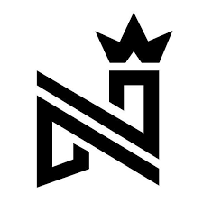

El artista venezolano Miguel Ignacio Mendoza Donatti, conocido como “Nacho”, aseguró este lunes, durante una entrevista dirigida por Jaime Bayly, presentador y periodista peruano, que si Nicolás Maduro lo invitara a una reunión él iría. Sin embargo, cuando Bayly le preguntó: ¿Qué consejo le daría?, el artista respondió que le diría que dejara el poder. “Claro que iría a la reunión, así como Trump va una reunión con Putin (primer mandatario de Rusia)”, dijo Nacho. Aseguró que aunque tuviera la oportunidad de atentar contra la vida de Maduro no sería capaz de hacerlo.